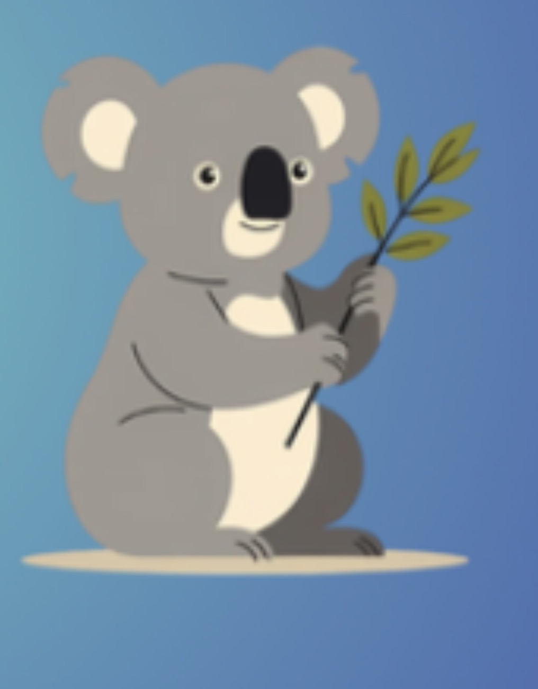
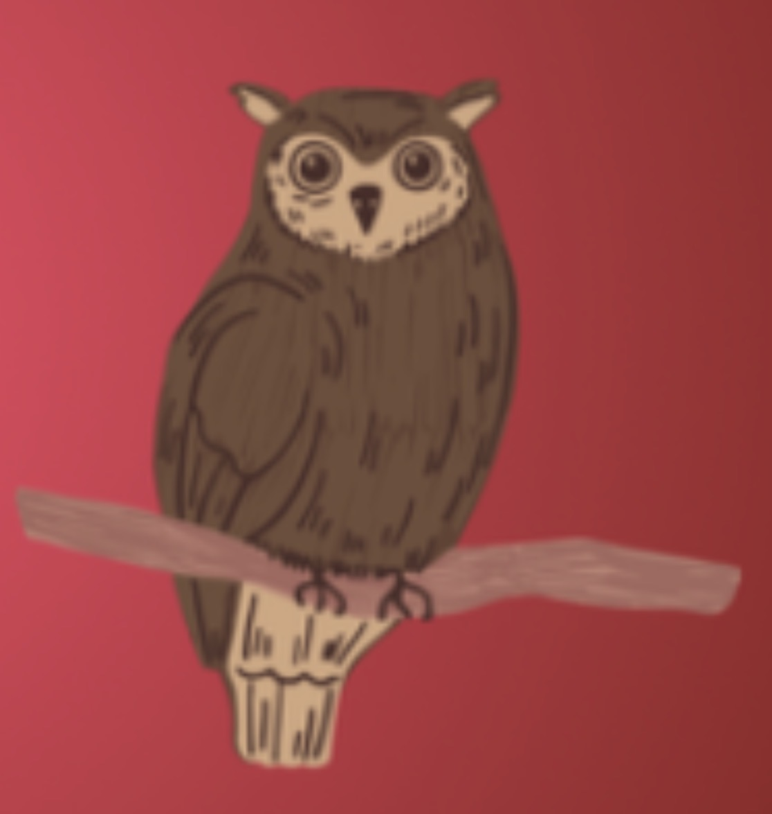
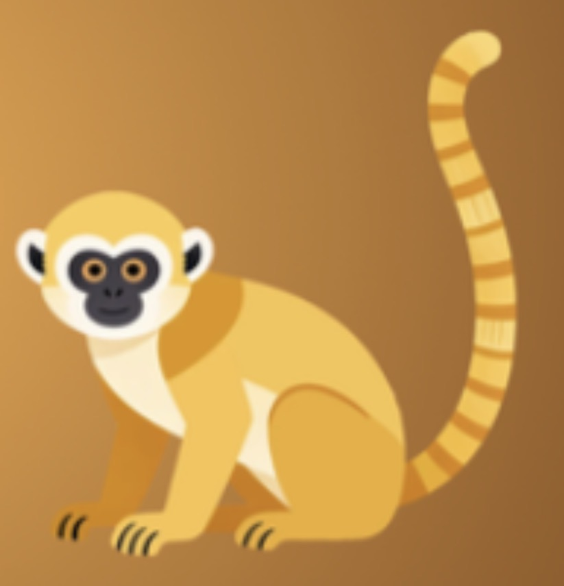
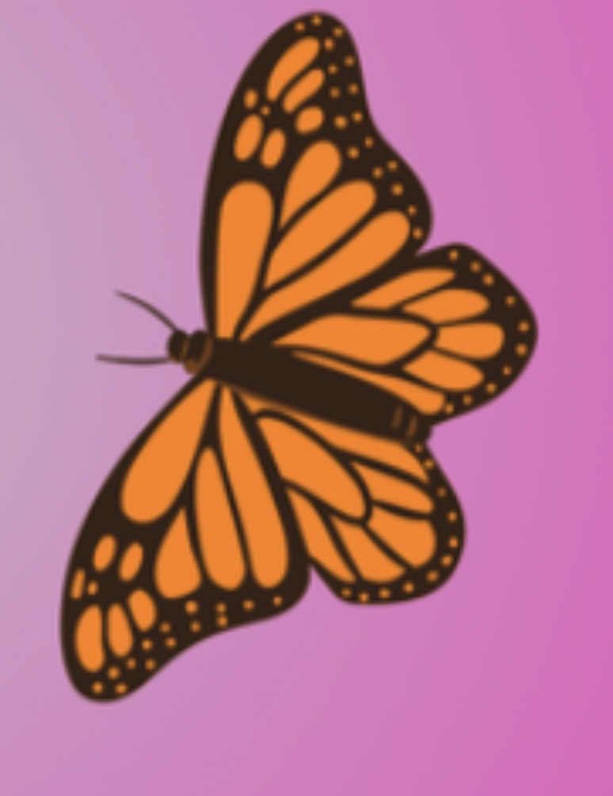
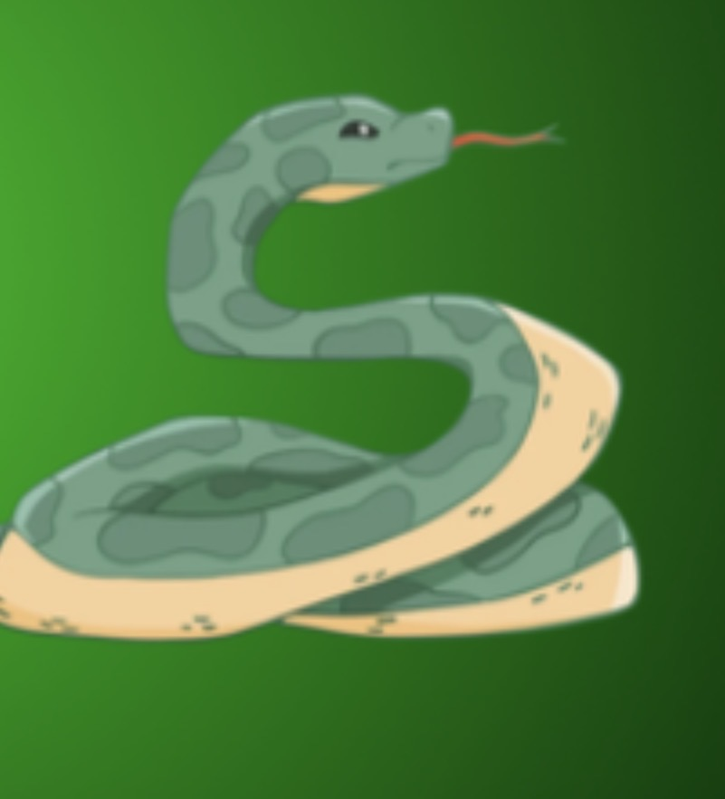
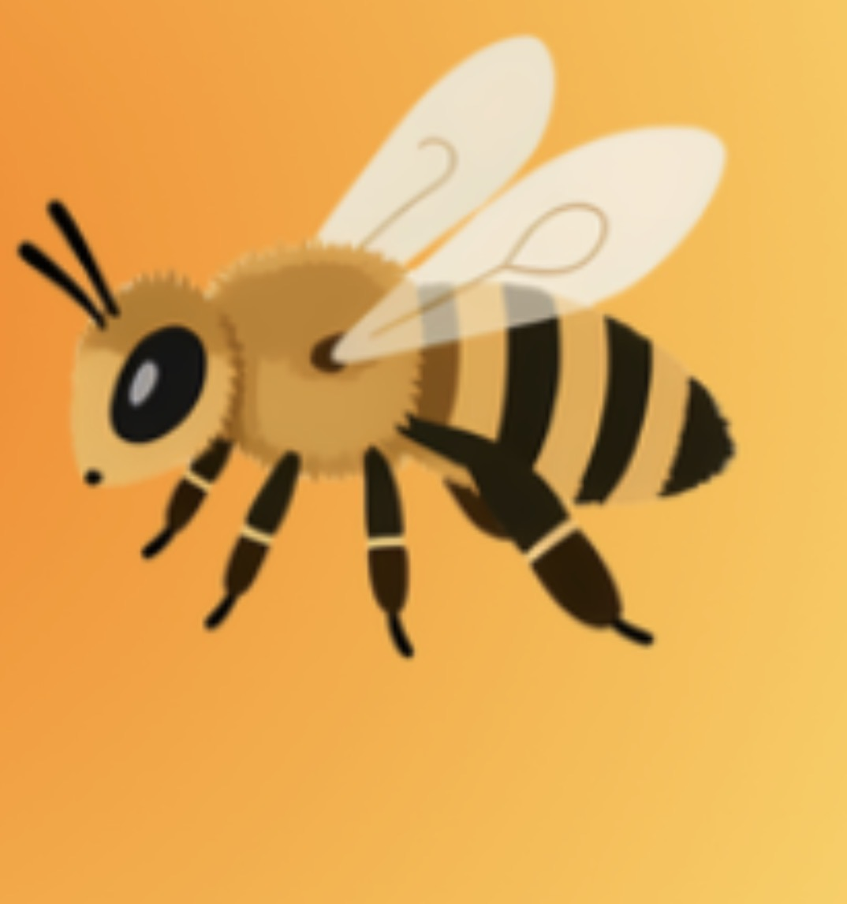

Rana
La saltarina del agua
Las ranas son anfibios. Nacen como renacuajos y después desarrollan patas. Algunas pueden saltar hasta 20 veces el tamaño de su cuerpo.
Cada animalito tiene algo especial por enseñarnos. Descubre datos curiosos, conoce la naturaleza y diviértete mientras aprendes.
Cada jabón incluye una tarjeta coleccionable con información para que la aventura continúe después de la hora del baño.
La saltarina del agua
Las ranas son anfibios. Nacen como renacuajos y después desarrollan patas. Algunas pueden saltar hasta 20 veces el tamaño de su cuerpo.

El maestro del sigilo
El zorro tiene un oído muy desarrollado. Puede escuchar pequeños movimientos bajo la tierra o la nieve y cambia de pelaje según la estación.

El dormilón del bosque
El koala es un marsupial y puede dormir hasta 20 horas al día. Vive en los árboles y se alimenta principalmente de hojas de eucalipto.

El vigilante nocturno
Los búhos pueden ver muy bien durante la noche. Sus plumas les permiten volar casi sin hacer ruido y pueden girar mucho la cabeza.

El acróbata de la selva
Muchos monos utilizan su cola para mantener el equilibrio y agarrarse de las ramas. Son animales inteligentes, curiosos y muy sociales.

La reina de la transformación
Las mariposas comienzan su vida como orugas. Después forman una crisálida y finalmente salen convertidas en mariposas.

La experta en deslizarse
Las serpientes no tienen patas. Se mueven deslizando su cuerpo y utilizan su lengua para conocer mejor lo que sucede a su alrededor.

La guardiana de las flores
Las abejas ayudan a polinizar las plantas. Gracias a ellas pueden crecer muchas frutas, flores y semillas. Viven juntas dentro de colmenas.
Pon a prueba lo que aprendiste con nuestros juegos infantiles.
Encuentra las parejas de nuestros animalitos y demuestra qué tan buena es tu memoria.
Jugar memoriaLee cada pista, piensa bien y descubre qué animal de PAPOIS BUBBLE se encuentra escondido.
Comenzar juegoContesta preguntas sobre la naturaleza y comprueba cuánto sabes de cada animalito.
Iniciar quiz